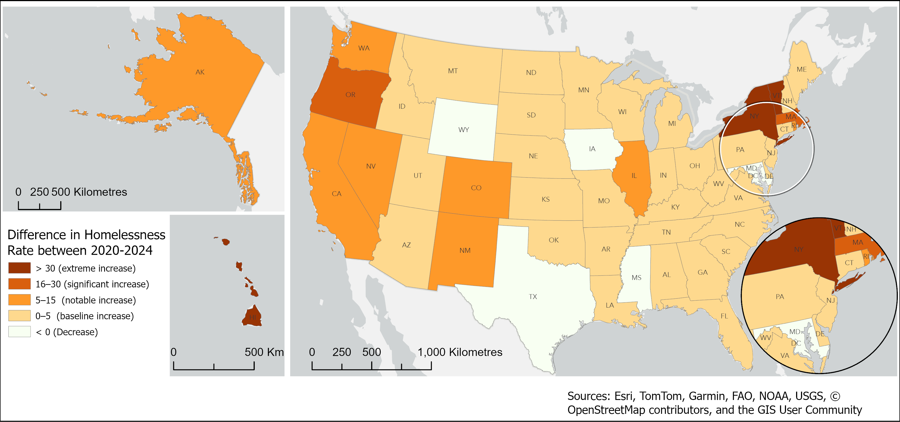

Context / Why It Matters
Homelessness in 2024 can be read in more than one way. Total counts show where the largest number of people are affected, while rates show where homelessness is most intense relative to population size.
Main Visuals
Total Homeless People, 2024

Homelessness Rate per 10,000 People, 2024

Difference in Homelessness Rate, 2020-2024

Percentage Unsheltered, 2024

Analysis
Homelessness varies not only by scale, but by intensity, change, and structure. A state with a high total count may not have the highest rate, and a state with a smaller count may show a more severe per-capita condition.
The regional pattern discussion compares where rates are elevated, where growth from 2020 to 2024 is strongest, and where unsheltered homelessness forms a larger share of total homelessness.
Methods
Compile state homelessness totals, calculate population-adjusted rates, compare 2020 and 2024 values, and summarize unsheltered percentage. Use static maps and comparison charts to separate count, rate, change, and composition.
Tools Used
ArcGIS Pro, spreadsheet or statistical cleaning workflow, static cartographic exports, chart design.
Limitations
Point-in-time homelessness counts are sensitive to survey timing, local methods, definitions, and reporting consistency. Rates depend on the selected population denominator and year alignment.
Data Sources
U.S. Department of Housing and Urban Development AHAR / Point-in-Time homelessness data; U.S. Census population estimates; project-derived rate, change, and unsheltered percentage calculations.
Conclusion / Next Step
The next step is to add a brief region-by-region interpretation that connects the map sequence to state-level policy context.
Back to GIS Portfolio